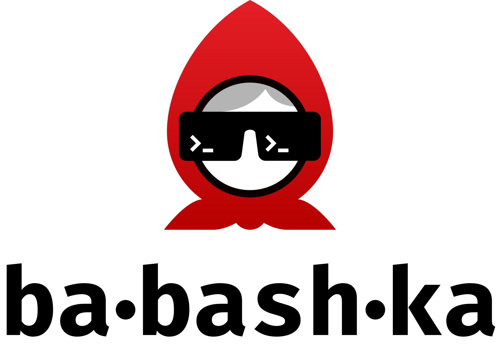
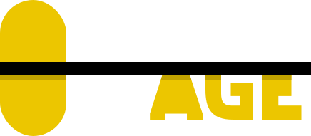
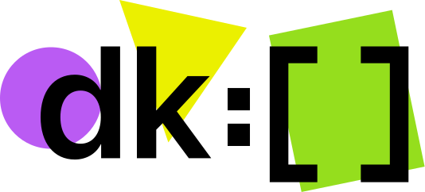
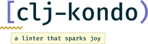
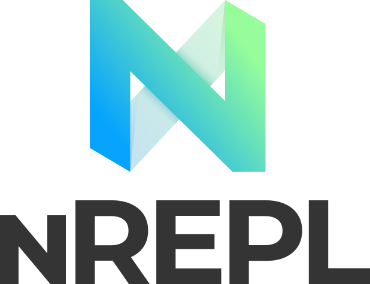
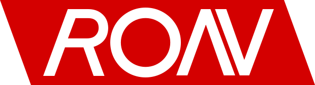
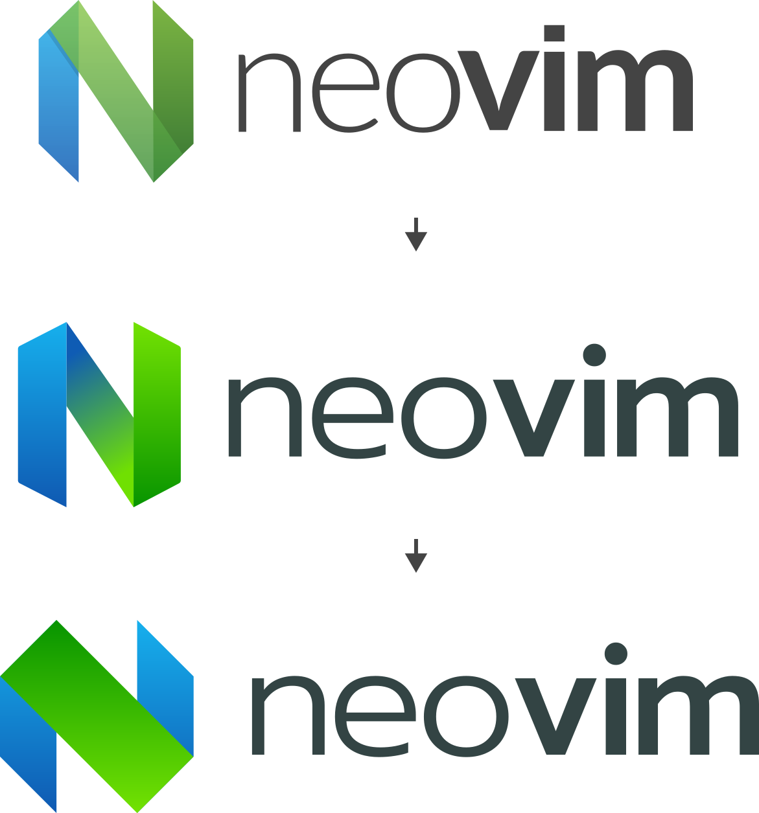
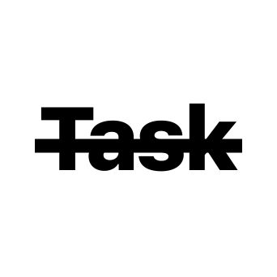
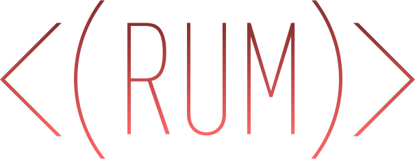

Sometimes, when I have a bit of free time and mind, I like to casually design logos for my or my friends’ projects.
2019

Babashka is a tiny Clojure interpreter for shell scripting. By Michiel Borkent.

My entry for the logo contest for Age, a simple, secure and modern encryption tool with small explicit keys, no config options, and UNIX-style composability. By Filippo Valsorda.

Deklarota is really declarative, functional reactive OOP MVC Flux/Redux framework. By Gleb Arestov.
A logo I designed for an internal JetBrains project.

Clj-kondo is a linter for Clojure code that sparks joy. By Michiel Borkent. When printing the stickers, typography called because they thought there were spelling errors in the logo.
An icon for an unreleased note-taking application.
Unofficial icon and a logo for Kaocha, full featured next generation Clojure test runner. By Arne Brasseur.
Speculative is an unofficial community-driven specs for clojure.core. By Michiel Borkent.
2018

nREPL is the most popular Clojure network REPL. By Chas Emerick, Bozhidar Batsov & the team.

RON is a format for continuous data synchronization. Ron is a successor of Swarm.js, so the logo reflects that. By Victor Grishchenko.

Unofficial Neovim logo upgrade nobody asked me to do.

An icon for an unreleased task manager app.
DataScript is a popular immutable database and Datalog query engine for Clojure, ClojureScript and JS. Typography was confused when I send them the file because they thought fonts went bananas.
2017
Clojure Warrior was my Visual Studio Code extension for Clojure development.
2016

Rum was a simple, decomplected, isomorphic HTML UI library for Clojure and ClojureScript.
2014
Fira Code is an extremely popular monospaced font with programming ligatures that still has no decent logo. It has this piece of wall art though.